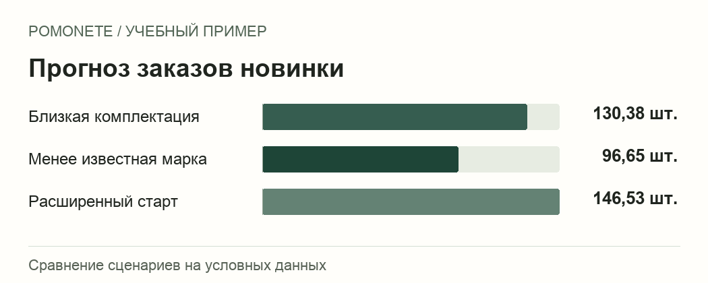

Прогноз продаж новинки на Яндекс Маркете по товару-аналогу
Как селлеру использовать историю близкого SKU и поправку на плановую экспозицию.
У продавца есть новая насадка для шланга. История продаж на Яндекс Маркете пока отсутствует, зато близкая модель уже была в продаже. Аналитика новинки использует измеренную частоту заказа у аналога и несколько вариантов ожидаемых показов, прежде чем решать о крупной закупке.
Как выбирать аналог
Сверьте назначение, диапазон цен, комплект и доступность близкого изделия. По возможности возьмите несколько подтверждённых аналогов и запишите, почему выбрали каждый. Слишком успешный лидер обычно завысит прогноз неизвестной позиции. Промо и базовую экспозицию имеет смысл держать отдельно.
Чтобы пересобрать расчёт «Прогноз заказов новинки» для своего магазина, перенесите в него исходные числа. В формуле A обозначает «заказы у аналога», B обозначает «показы аналога», C обозначает «ожидаемые показы новинки». Сначала оценивается интенсивность на единицу базы, затем она применяется к новому объёму. Допущение о постоянной интенсивности требует проверки. Запишите рядом период и охват каждого среза. Если для одной строки известна только оценка, оставьте пояснение непосредственно рядом с ней: по итоговой цифре источник уже не восстановить.
Прогноз заказов новинки = A ÷ B × C
| Условие | Заказы у аналога | Показы аналога | Ожидаемые показы новинки | Прогноз заказов новинки |
|---|---|---|---|---|
| Близкая комплектация | 143 | 3 400 | 3 100 | 130,38 шт. |
| Менее известная марка | 106 | 3 400 | 3 100 | 96,65 шт. |
| Расширенный старт | 106 | 3 400 | 4 700 | 146,53 шт. |

В сценарии «Близкая комплектация» в формулу подставляем заказы у аналога = 143, показы аналога = 3 400, ожидаемые показы новинки = 3 100. Получается 130,38 шт.. У нового товара схожий комплект, цена в наблюдении совпадает по диапазону.
В сценарии «Менее известная марка» в формулу подставляем заказы у аналога = 106, показы аналога = 3 400, ожидаемые показы новинки = 3 100. Получается 96,65 шт.. Для осторожности взята частота продаж похожих товаров с меньшей известностью.
В сценарии «Расширенный старт» в формулу подставляем заказы у аналога = 106, показы аналога = 3 400, ожидаемые показы новинки = 4 700. Получается 146,53 шт.. Предполагается дополнительный охват. Характеристика аудитории требует контроля.
Если «Близкая комплектация» взять за исходную точку, «Менее известная марка» меняет показатель «прогноз заказов новинки» на -33,74 шт., а «Расширенный старт» на 16,15 шт.. Между двумя последними строками разница составляет 49,88 шт. при вычитании второй из третьей. Смотрите, какой именно вход изменился между строками. Если менялись объём и условия одновременно, итог сравнения относится ко всему сочетанию.
От меньшего результата до большего в таблице 49,88 шт.. При переходе из «Менее известная марка» со значением 96,65 шт. в «Расширенный старт» со значением 146,53 шт. условия заданы явно. Этот интервал описывает три построенных случая, а для вероятности исходов нужна история. В рабочей записке полезно назвать минимальное значение, при котором сохранится ваше решение. Если такой порог попадает внутрь интервала, подтвердите спорный параметр до того, как менять процесс.
Что оценка не вместит автоматически
Новинка может иметь другую аудиторию, мало отзывов и иной срок получения. Если трафик приведён извне, характеристики покупателей тоже могут отличаться. Диапазон нужен для пробной поставки. После первых данных пересчитайте частоту и проверяйте её на закрытых заказах.
У сценария «Менее известная марка» есть входы: заказы у аналога, показы аналога, ожидаемые показы новинки. Для каждого впишите, где взять факт и с каким временным лагом он поступит. Опорой будут история продаж, журнал остатков и даты фактических приходов. Если один источник обновляется быстрее другого, зафиксируйте общий момент доступности. При существенном разрыве покажите последние данные отдельным оперативным значением.
В историю поставок запишите обещанную и фактическую дату, момент доступности товара и интервал, в котором возник недозаказ. Разовые всплески спроса и дни без товара полезно отмечать отдельно. Когда данных мало, прогноз на ближайший горизонт лучше держать несколькими уровнями и привязывать каждый к своему действию. При высокой неопределённости небольшая партия с возможностью докупки даёт другую экономику, чем дешёвая крупная партия с долгим ожиданием.
Что сильнее всего меняет результат
Возьмём сценарий «Менее известная марка» с результатом 96,65 шт.. В нём последовательно изменим «заказы у аналога», «показы аналога», «ожидаемые показы новинки». Для каждого входа шаг близок к 10% его исходной величины, целые значения округлены. После каждого опыта возвращаем остальные числа к исходным. Так можно выяснить, какой вход уточнять первым, если перед решением мало времени.
- «Заказы у аналога» меняется с 106 на 117. При прежних остальных входах получается 106,68 шт., сдвиг составляет 10,03 шт..
- «Показы аналога» меняется с 3 400 на 3 740. При прежних остальных входах получается 87,86 шт., сдвиг составляет -8,79 шт..
- «Ожидаемые показы новинки» меняется с 3 100 на 3 410. При прежних остальных входах получается 106,31 шт., сдвиг составляет 9,66 шт..
При выбранных шагах самый крупный сдвиг дал параметр «заказы у аналога»: 10,03 шт.. Если в магазине эта величина меняется в узком диапазоне, подставьте обе его границы. Для связанных условий добавьте отдельную строку с одновременным изменением входов и поясните их связь в примечании.
В качестве нижней границы возьмите цену и частоту завершения у товара с более долгой доставкой. Обсудите судьбу непроданных остатков до запуска: возможность продать другим каналом меняет допустимый риск, даже если ожидаемые заказы на Маркете те же.
Как перевести в план поставки
Договоритесь, какой объём можно действительно подготовить, сколько времени займёт повторная партия и где будет лежать запас. Для первоначального заказа добавьте простую дату контроля, после которой прогноз обновится. Если первые показы ниже плана, пересмотрите в первую очередь объём экспозиции.
На очередном пересмотре отметьте, какие сроки реализовались и какой был спрос в дни с доступным запасом. Оценку качества считают на событии, которое наступило после составления прогноза. Так проще отделить неточность метода от изменившейся доступности поставщика. Храните старые допущения: когда рынок меняется, восстановить причину размера закупки можно по сохранённым датам и объёмам.
Для управленческой встречи подготовьте два небольших примера из рабочих записей. Первый сверяет «прогноз заказов новинки» при базовых условиях «Близкая комплектация». Второй берёт изменившуюся строку и объясняет, какой источник исправлен. Селлеру Яндекс Маркета будет проще повторить расчёт на новой группе, если видны исходные значения, дата анализа и момент, когда итог станет достаточно точным для решения.